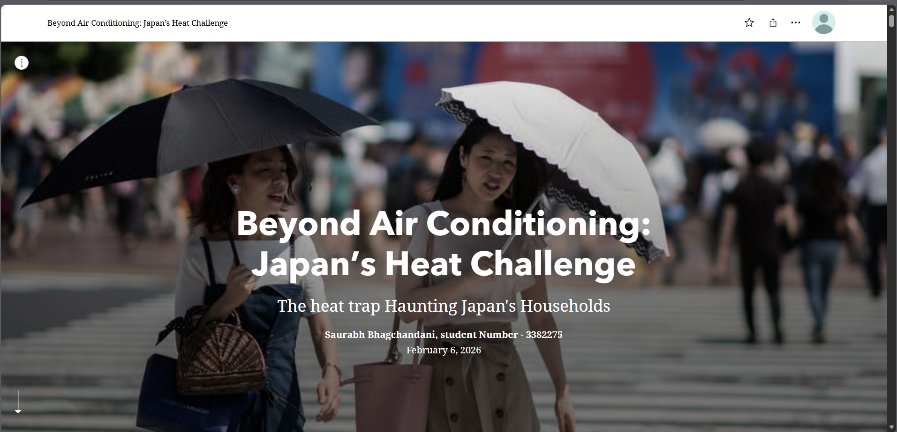

Beyond Air Conditioning: Japan’s Heat Challenge
This project explores extreme heat in Japan through an interactive StoryMap that brings together Earth Observation, climate, urban, and demographic perspectives. It focuses on understanding how heat affects people and places, and how those impacts vary across different regions.
The project combines spatial storytelling with data-driven analysis to examine heat exposure, urban heat patterns, and possible responses to rising temperatures. It was designed to communicate both the scale of the challenge and the importance of climate-sensitive planning.
